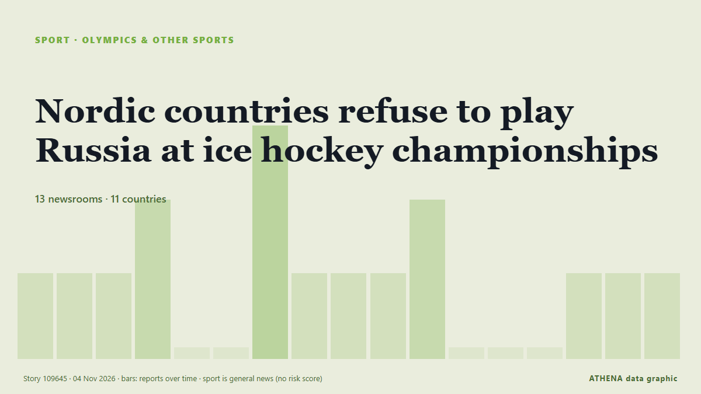

Спорт
Заголовки приводятся на английском языке, как они были опубликованы.

Олимпиада и другие видыNordic countries refuse to play Russia at ice hockey championships
The tournament is scheduled to be played in Germany in May. из Yle News (alternative feed)
| 22 окт. | 12 |
|---|---|
| 23 окт. | 16 |
| 24 окт. | 9 |
| 25 окт. | 32 |
| 26 окт. | 45 |
| 27 окт. | 64 |
| 28 окт. | 62 |
| 29 окт. | 72 |
| 30 окт. | 102 |
| 31 окт. | 72 |
| 1 нояб. | 76 |
| 2 нояб. | 91 |
| 3 нояб. | 66 |
| 4 нояб. | 0 |
Asian Cup in Saudi Arabia to be postponed
Saudi Arabia, which will host the FIFA World Cup in 2034, will have an opportunity to use the 2027 Asian Cup as a dress rehearsal for the World Cup. из Sportstar
FIFA visits Portugal as preparations for 2030 World Cup continue
A FIFA delegation is in Portugal this week to review preparations for the 2030 World Cup, which the country will co-host with Spain and Morocco. из The Portugal News
24-yr-old runner dies after collapsing two miles from NYC Marathon finish line
A 24-year-old first-time New York City Marathon runner, Rachel Apa, has died after collapsing just two miles from the finish line during the race in Central Park, with her father revealing that she… из Vanguard
West Ham sack Nuno Espírito Santo as head coach
Rui Pedro Silva and Rui Barbosa follow Nuno out of the door. из Evening Standard (London)
Saliba returns to Arsenal training after injury layoff
Arsenal centre back William Saliba returned to first-team training on Tuesday after nearly four months out with a back injury. из Cyprus Mail
20-year-old Antonelli becomes youngest Formula One world champion
Mexico City is up next in the F1 season and Kimi Antonelli is on the brink of being crowned the youngest world champion in the sport’s history. из The National
Funeral of Ciara Mageean hears of memorable wedding shortly before her death
Hundreds of mourners paid a final farewell to the Irish Olympic athletic at a requiem mass in her home town of Portaferry in Co Down. из Evening Standard (London)
Funeral of Irish Olympian Ciara Mageean to take place later in Co Down
‘Devastated’ Lady Mary Peters leads condolences. из Belfast Telegraph
Nearly 8.4 million ticket requests received for India and Pakistan's 2027 World Cup clash
Nearly 8.4 million ticket applications have been received for India and Pakistan’s group-stage clash at next year’s Men’s Cricket World Cup, organisers said on Monday. из Business Recorder
Everton beat Newcastle 1-0 to pile pressure on Jaissle
Live updates as Matthias Jaissle's side look to bounce back from their Carabao Cup exit. из Chronicle Live (Newcastle)
Carrick brushes off questions over his future ahead of Roma clash
Manchester United head coach Michael Carrick has brushed aside questions about his long-term future, saying his focus remained firmly on Tuesday’s home Champions League clash with AS Roma as his side… из Cyprus Mail
Bayern are doing well despite rollercoaster week, Kane says
The German champions are without coach Vincent Kompany and several key players through injury ahead of their Champions League clash with Atletico Madrid. из Free Malaysia Today
Hamilton says Ferrari need 'serious talks' after costly Leclerc attack
(ANSA) - ROME, 02 NOV - Lewis Hamilton has said Ferrari need some clear-the-air discussions following an attack from his team mate Charles Leclerc that he said cost the team a one-two at Sunday's… из ANSA English
Glenn Maxwell announces retirement from international cricket
Maxwell, popularly known as 'The Big Show', represented Australia in 149 ODIs, 130 T20Is and seven Test matches. из Times of India
South Africa's Verreynne, Prince receive ICC reprimands
South Africa batting coach Ashwell Prince and wicketkeeper Kyle Verreynne have been reprimanded by the International Cricket Council for showing dissent towards the umpires on the third day of the… из Business Recorder
"Not the time for Russia to return" — Finnish politicians condemn sports court ruling
The Court of Arbitration for Sport (CAS) ruled last week that Russian teams can return to ice hockey’s international tournaments. из Yle News (alternative feed)
Gabby Williams leads Valkyries to WNBA championship in second season, beating Dream 68-63 in Game 7
SAN FRANCISCO: Gabby Williams scored her team’s final 11 points of the third quarter and dazzled through the fourth on the way to 30 points, and the Golden State Valkyries captured a championship in… из Arab News
Kane would swap Ballon d'Or for Champions League victory
Bayern Munich striker Harry Kane has beaten Barcelona youngster Lamine Yamal and Real Madrid forward Kylian Mbappé to emerge as the best player of the 2025-2026 season in Spanish newspaper Marca's… из Vanguard
Russia back in ice hockey world championships after sport court ruling
Court of Arbitration for Sport overturned IIHF decisions that excluded Russia from events in the 2026-27 season. из Al Jazeera English
Aston Villa make legal action decision after Jamie Carragher apology
Pundit had told Villa supporters to "shut the f*** up" из Evening Standard (London)
Senegal prepares to open 2026 Youth Olympic Games in Dakar
Senegal’s three-day general strike entered its second day on Thursday, with unions pressing the government to honour agreements on pay, pensions and working conditions amid a deepening economic… из RFI English
Kimi Antonelli youngest F1 champion
This breaks the previous record set by Germany’s Sebastian Vettel in 2010. из The Business Times
Real Madrid matches still banned in China despite Mbappe apology
"I've seen a lot of responsibility from a club which, at this level, is a club of great class, and as far as we're concerned, that's it, we've done our part, there's nothing more for us to do,"… из Vanguard
Canelo reclaims WBC title as Mexico falls 5-4 to The World in Riyadh boxing showdown
RIYADH: Mexican boxing star Saul “Canelo” Alvarez reclaimed the World Boxing Council Super Middleweight title after defeating France’s Christian Mbilli by unanimous decision in the final bout of… из Arab News
Arsenal win at Anfield for first time in 14 years to move top
Arsenal won at Anfield for the first time in 14 years after Kai Havertz's strike sealed a gritty 1-0 victory - but Liverpool were denied what looked to be a clear penalty. из Sky Sports
Almgren wins debut marathon in New York, Chepkirui wins women’s race
Sweden’s Andreas Almgren won the New York City Marathon, clocking 2hr 6min 1sec in a spectacular debut at the distance on Sunday. из The Namibian
Alcaraz beats De Minaur to win Vienna title
Carlos Alcaraz beat Alex de Minaur 6-1 6-4 to win the Vienna Open on Sunday, claiming his fourth title of the season and the 28th of his career, and extending his ATP 500 winning streak to 26 matches. из Cyprus Mail
Chinese state TV fails to air Real Madrid match after Mbappe row
Mbappe, Real and La Liga later all said sorry for his remarks, and China's foreign ministry said it took the player's apology "seriously". из CNA (Channel NewsAsia)
Ten Hag says relegation a real possibility for Man Utd
United sit 17th with seven points from nine games, above relegation-placed Crystal Palace on goal difference, and are winless in nine matches, their longest run without victory since 1984. из Free Malaysia Today
1 killed, 8 injured in shooting outside 'Magic City Classic' in Alabama
One person was killed and eight others were wounded in a mass shooting just outside Legion Field after the annual "Magic City Classic" football game, police in Birmingham, Alabama, said. из ESPN
09:56 Summer Youth Olympic Games flame lit in Senegal Sport
The country is hosting nearly 2,700 young competitors aged 14 to 17 from around the world. из Channels TV
Hamilton laments Ferrari's missed one-two after Leclerc clash in Mexico
Charles Leclerc clocked a best lap time in 1min and 18.128sec to outpace Kimi Antonelli by 0.659sec in the opening free practice of the Mexico City Grand Prix. из Free Malaysia Today
Andoni Iraola: We have to tell players to dive for penalties
Alexander Isak was denied a spot-kick in Liverpool’s loss to Arsenal despite a clear pull by Jurrien Timber. из The Irish News (Belfast)
Penalty drops Oscar Piastri out of F1 Mexico GP points
Oscar Piastri’s tough Mexico Grand Prix weekend has ended in point-less fashion, after the McLaren Formula 1 driver copped a penalty for his collision with Arvid Lindblad. из Motorsport.com